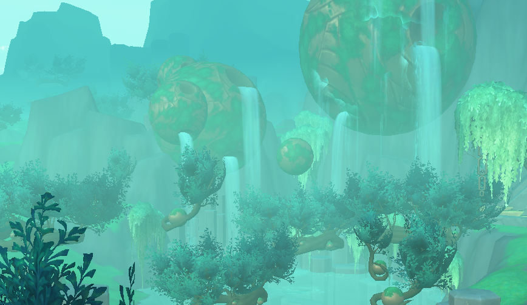

Somehow you managed to climb your way to the end-game. You might be looking around, confused about what to do next. There are more quests, so did hitting sixty really change anything? Surprise surprise, you have more options than you realize!
Questing... Again.
Yes, I know you just spent forever questing, but I promise these quests are a little more exciting! They allow you to unlock some zones that you could not access before level sixty. Particularly, Zereth Mortis is a zone of interest. You can find new characters, new stories, and more powerful foes in this end-game zone. The goal is to get as strong as possible with better armor and weapons.
Raids
At level sixty, you can investigate raiding with a guild. Raids are like dungeons, but they have a lot more foes and bosses. They require a lot of skill, and they can offer exciting rewards of some of the most powerful equipment in the game or even special pets and mounts for completing them.
Roleplay
If you are a fan of roleplaying, you can find a thriving community of others like you in World of Warcraft. They commit to their characters, wandering cities, towns, zones, or anywhere else of interest! These people are friendly and love seeing new people join in on the fun. Some even orchestrate large-scale sessions where you move between zones or take on a certain part for a larger roleplay.